I turn interior-design concepts into buildable shop drawings — full construction sets with materials, hardware, LED and stone coordination, ready for production. Remote, based in Saint Petersburg, open to relocation.
Every project below started as a designer's concept and ended as a full shop-drawing set: dimensioned cabinet carcasses, hardware and LED specification, material call-outs, and the site-specific fixes that only show up once a real room, a real wall, or a real appliance gets involved.
I've picked pieces that show the range of that work — from a kid's room with an engineered cable-management desk, to a classical raised-panel wardrobe spanning 5.7 metres, to a curved bathroom shell built around a single radius wall.
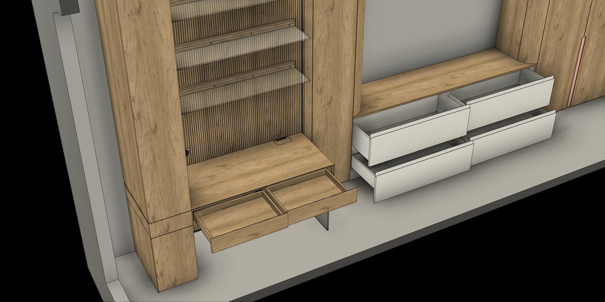
Sample 01 — Kids' Room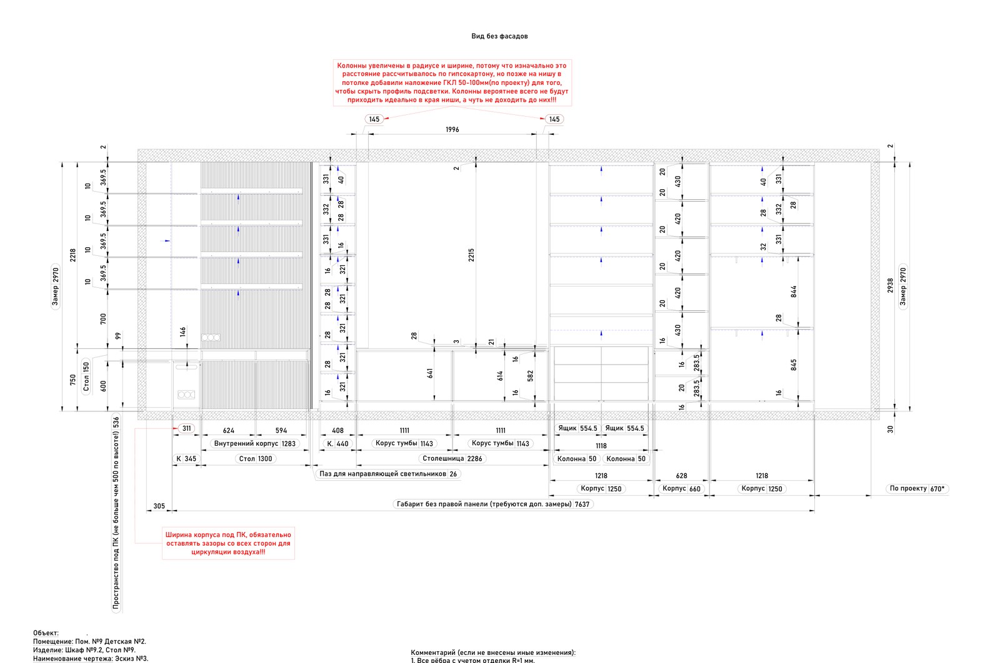
Drawing excerptDimensioned elevation & sections ↗A single wall unit combining a desk with pull-out drawers, an open shelf tower, and a wardrobe with a dedicated PC compartment. The 500 mm cabinet depth was too shallow for a standard horizontal closet rail, so I re-engineered the hanging rail to run perpendicular to the cabinet width instead — a fix that only surfaces once you draw the section. Also handled: multi-zone LED runs across shelves and toe-kicks, glass shelf brackets, and clearance gaps around the PC bay for airflow.
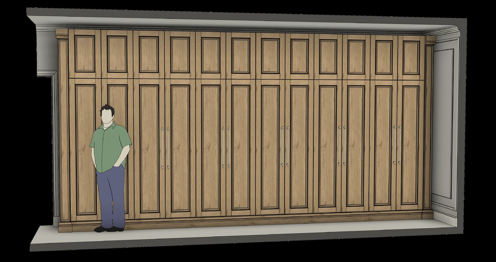
Sample 02 — Classical Wardrobe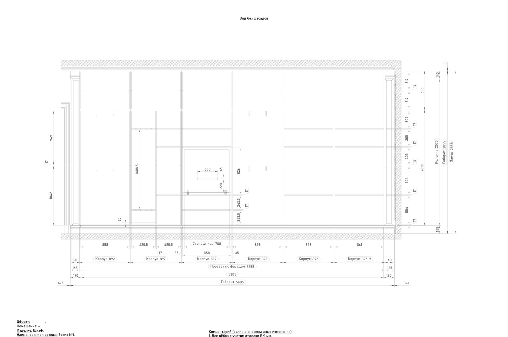
Drawing excerptDimensioned elevation & sections ↗A traditional panelled wardrobe run — cornice, fluted pilasters, and applied mouldings — built to read as classical millwork rather than flat-front cabinetry. Behind one door section, a fold-out table slides out on its own carcass. The main compartments use Push-to-Open fronts while the upper mezzanine uses soft-close, so I mapped both systems across twelve equally-sized door modules without breaking the panel rhythm.
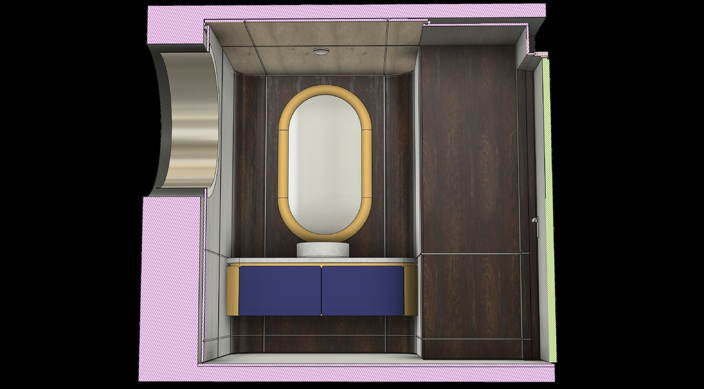
Sample 03 — Curved Bathroom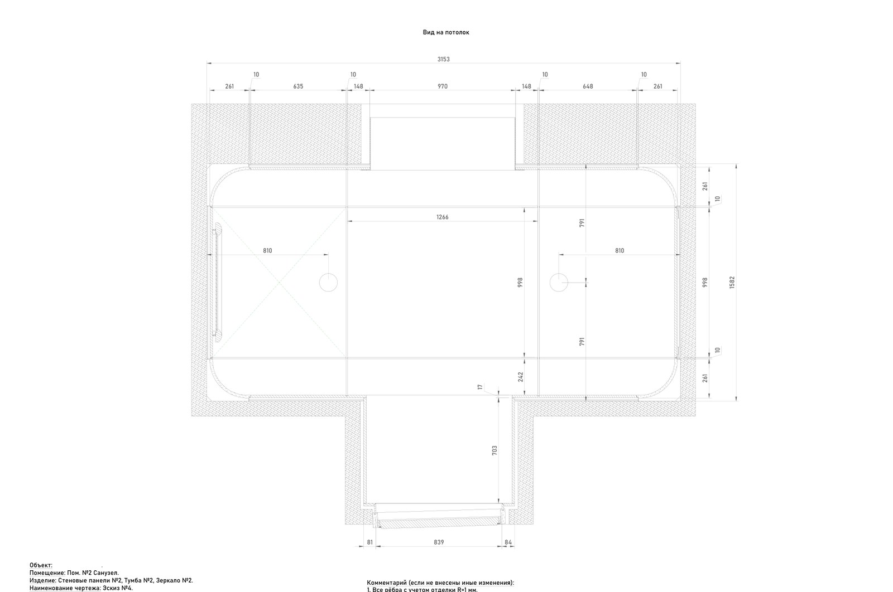
Drawing excerptDimensioned reflected ceiling plan ↗One wall of this bathroom curves into a radius return, so the panelling, the ceiling trim, and the backlit oval mirror all had to be drawn as a single continuous shell rather than flat panels butted at a corner. The stone vanity top is explicitly excluded from the millwork scope and only measured after installation — a coordination note I flagged directly on the drawing so the stone fabricator and the joinery crew don't collide on site.
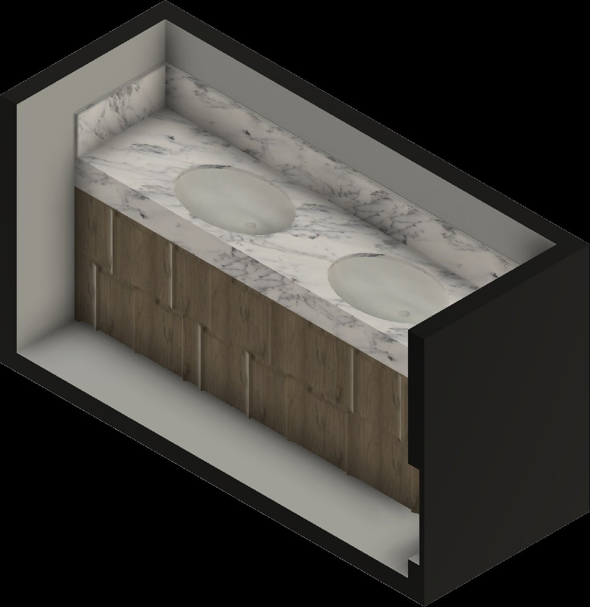
Sample 04 — Bath Vanity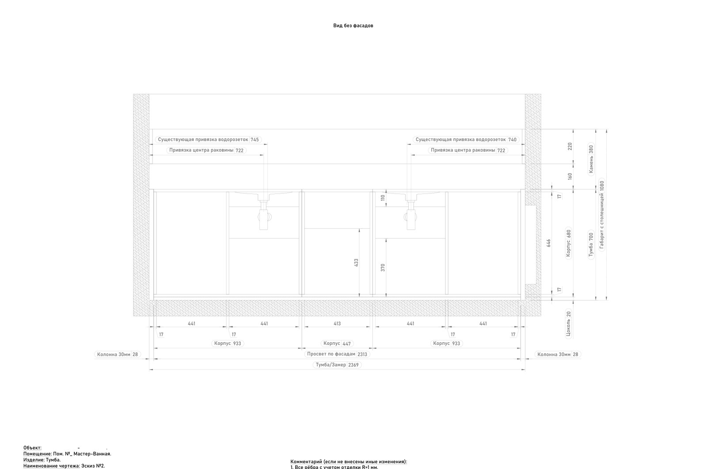
Drawing excerptDimensioned elevation & sections ↗Ten drawer fronts are laid out in a basket-weave veneer pattern that has to line up perfectly across the whole run — meaning every drawer box width was derived from the façade grid, not the other way round. Each undermount basin is centred exactly on its drawer face, and I cross-referenced the plumbing rough-in (fan pipe and water points) against the drawer carcasses before finalising depths, since basins and drawer boxes were fighting for the same 700 mm zone.
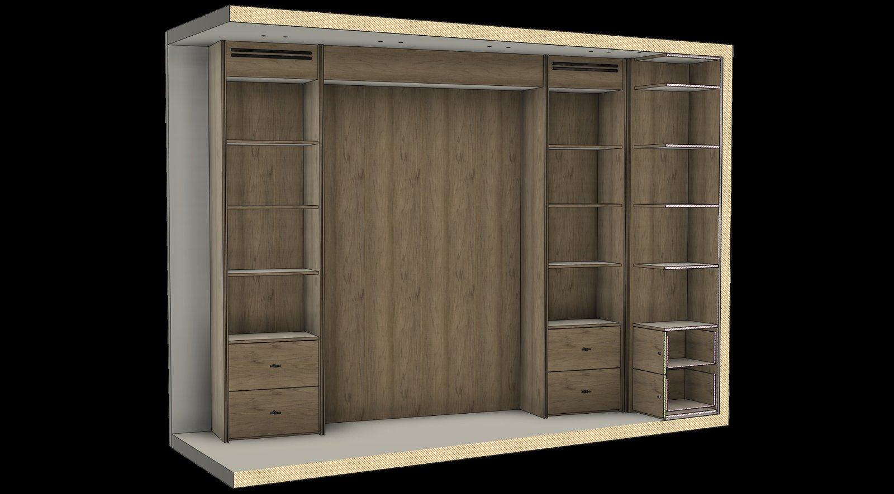
Sample 05 — Library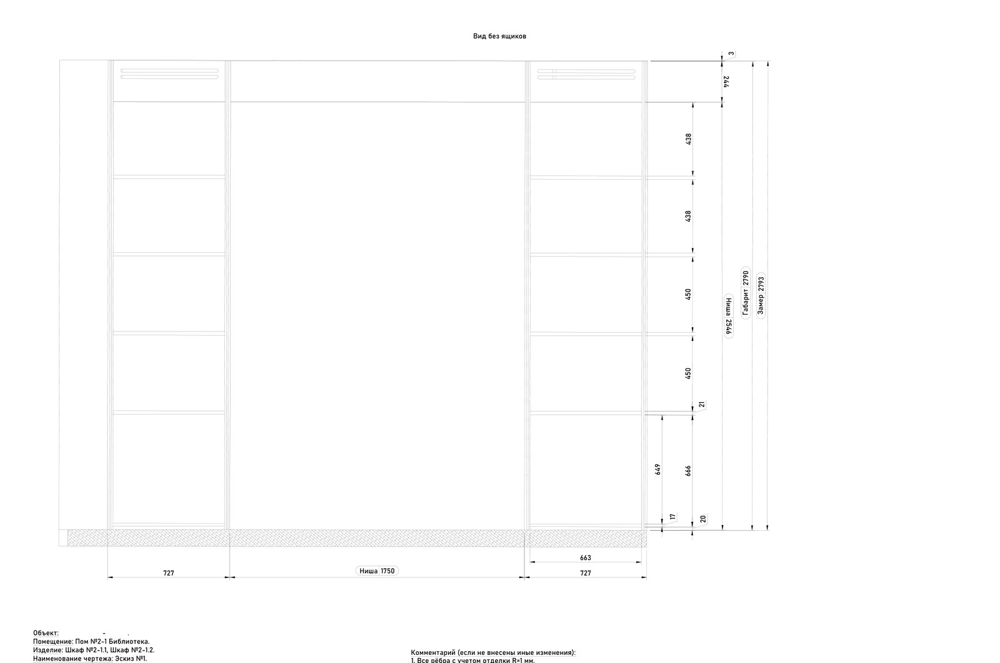
Drawing excerptDimensioned elevation & sections ↗A continuous shelving wall that has to leave two exact, appliance-sized voids for a pair of slim wine cabinets while keeping the shelf rhythm visually even across the whole run. I drew both openings straight from the appliance's own service clearances rather than rounding to the nearest shelf module, then carried the same bay width back through the drawer bases below for a consistent façade line.
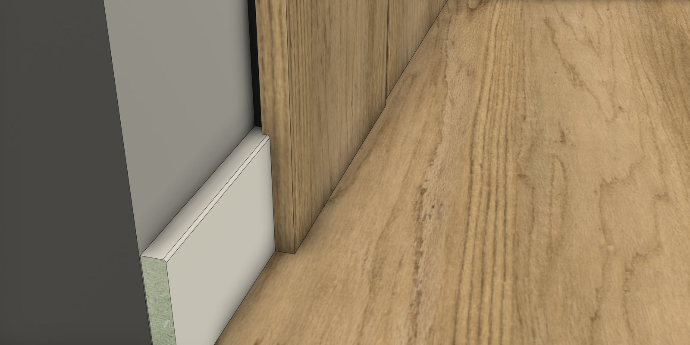
Sample 06 — Wall Panelling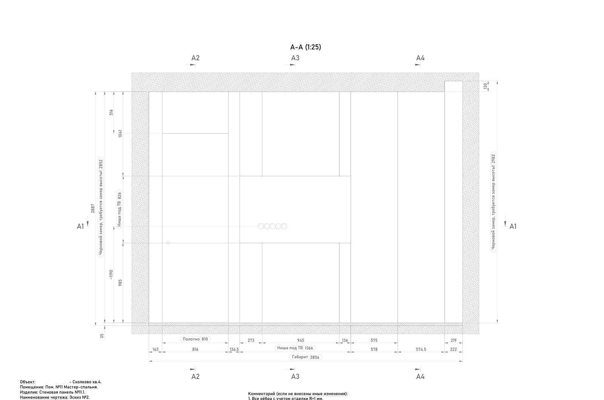
Drawing excerptDimensioned sections ↗A panelled bedroom wall where the TV recess and an existing ventilation outlet both had to disappear into the same veneer grid without breaking the panel joints. The recess is backed in plywood rather than MDF to carry the TV mount load, and every reveal line was set out to land on a real panel seam rather than an arbitrary grid — the kind of decision that only shows up once you draw the elevation full-scale.
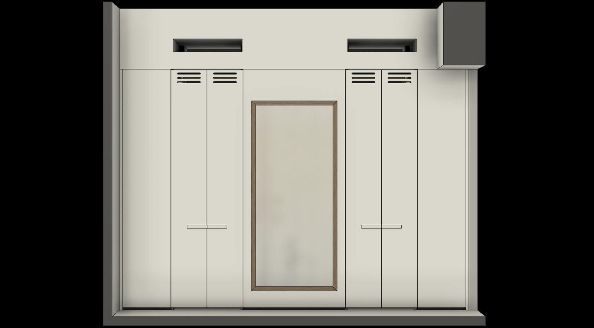
Sample 07 — Walk-in Wardrobe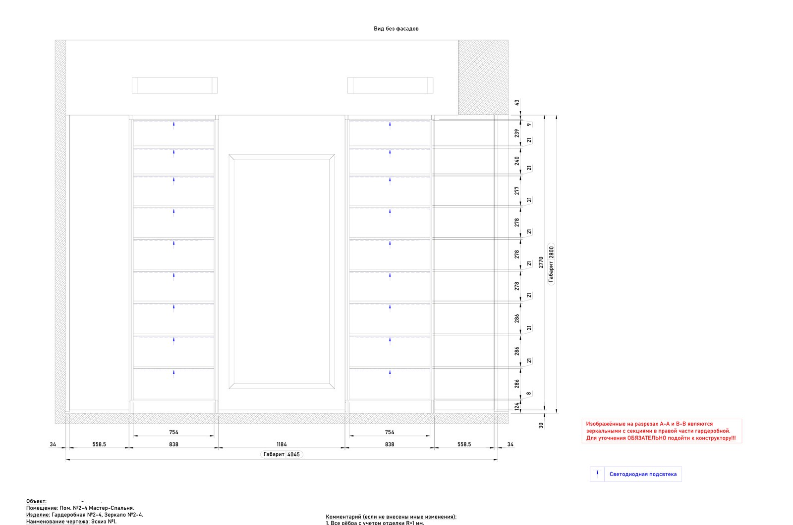
Drawing excerptDimensioned elevation & sections ↗Two full-height wardrobe carcasses flank a central backlit mirror, and — because the whole wall is symmetrical — the right-hand assembly mirrors the left rather than being drawn twice. I flagged that mirroring explicitly on every section so the workshop doesn't build two left-handed cabinets by mistake. Every visible horizontal and the six pull-out drawers carry LED strip lighting, run from a single external switch.